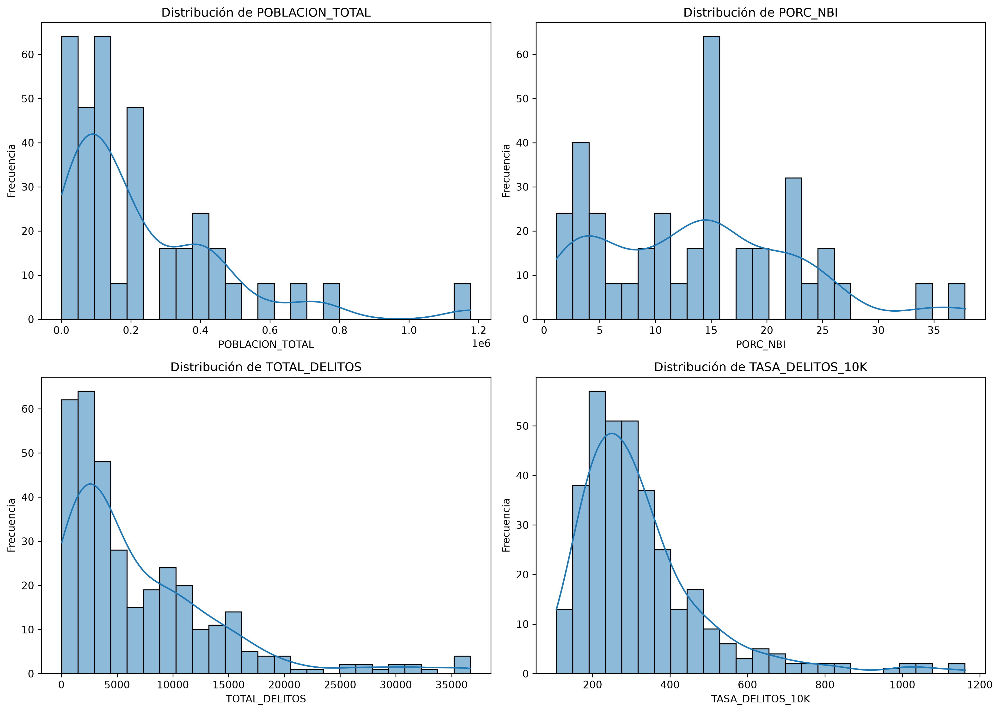
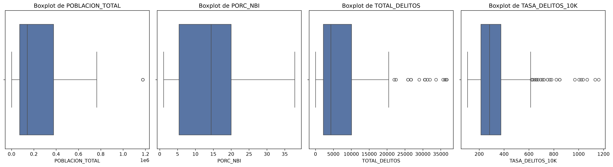
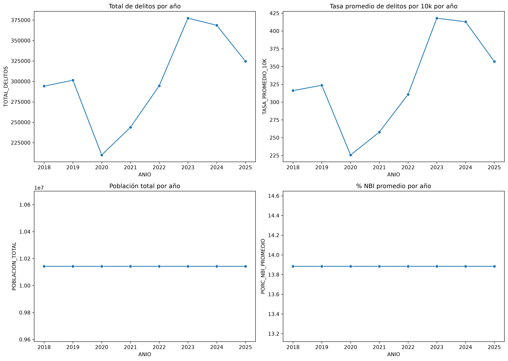
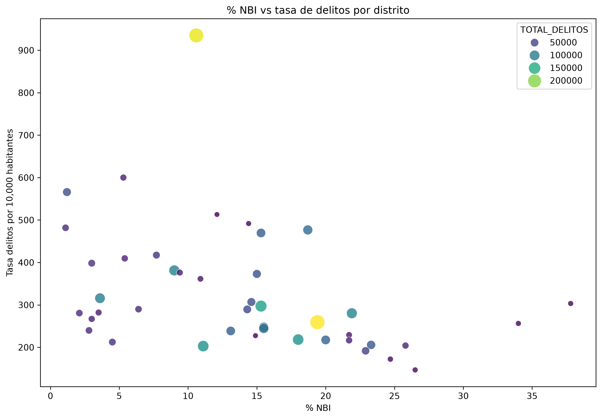
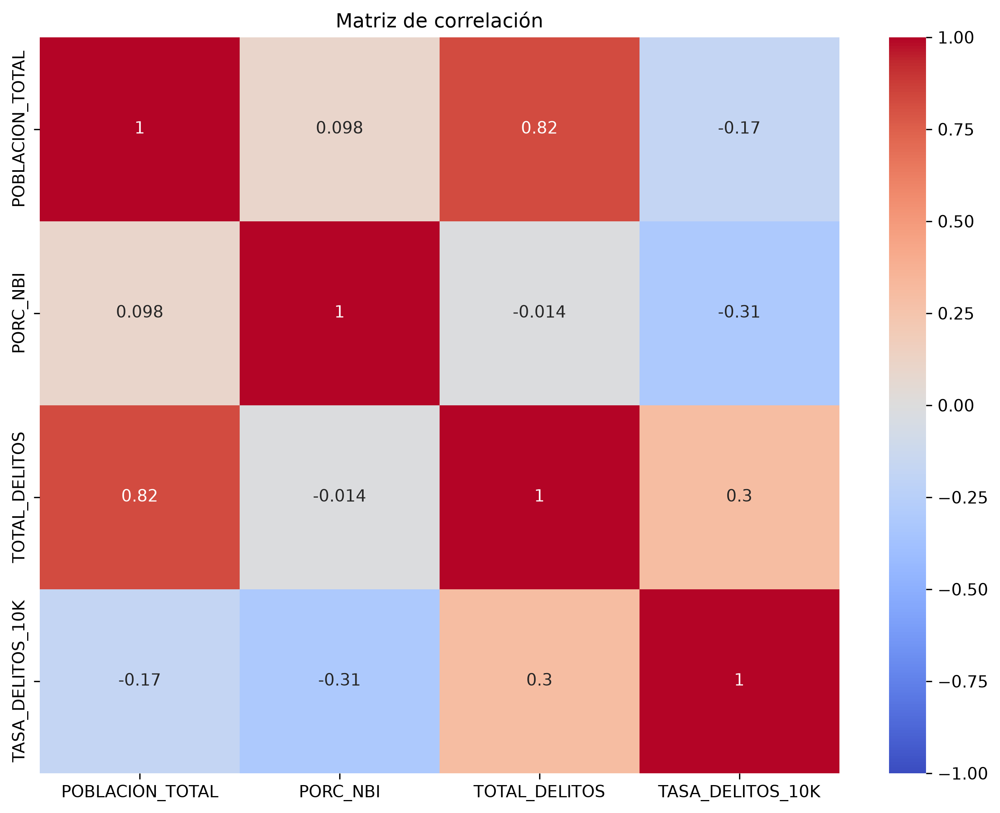
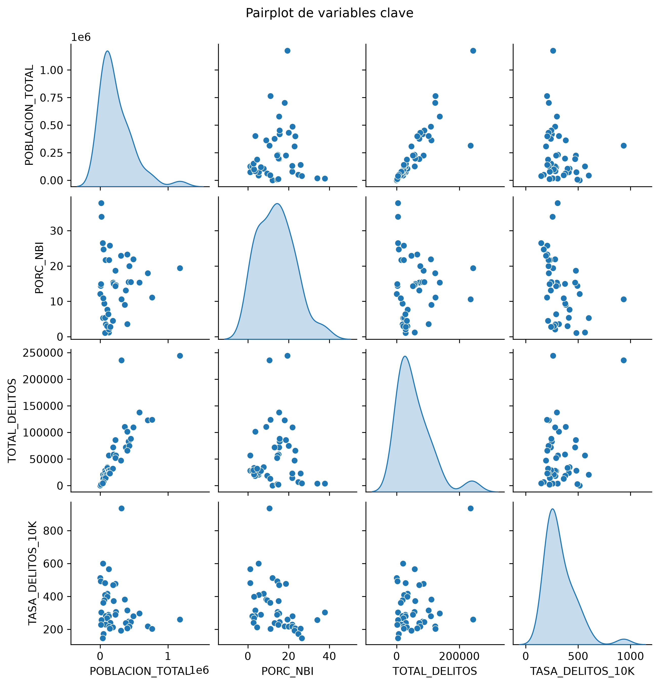
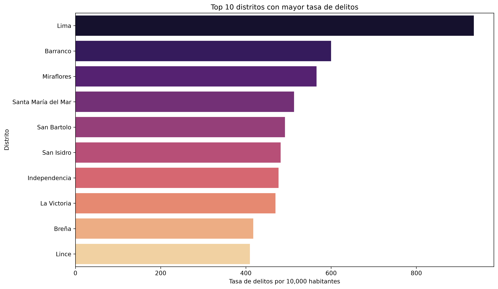

La seguridad ciudadana y la vulnerabilidad social son temas centrales en la agenda pública de Lima Metropolitana. En un contexto de crecimiento urbano y desigualdad territorial, resulta relevante analizar si existe una relación entre la incidencia delictiva y las condiciones de pobreza o exclusión social. Este trabajo explora patrones entre distritos y años para describir diferencias territoriales y detectar asociaciones entre criminalidad y vulnerabilidad socioeconómica.
El objetivo principal es describir la relación entre la tasa de delitos y la vulnerabilidad social en los distritos de Lima Metropolitana. Para ello, se usan variables como población total, porcentaje de NBI, total de delitos y tasa de delitos por cada 10,000 habitantes.
El estudio se construyó a partir de dos fuentes principales. La primera corresponde a los registros de denuncias policiales de Lima Metropolitana, contenidos en el archivo crudo DATASET_Denuncias_Policiales_Enero 2018_Julio2026_LIMA.csv, donde cada fila representa un caso reportado por mes, año, distrito y modalidad delictiva. Los campos clave incluyen ANIO, MES, UBIGEO_HECHO, DISTRITO, P_MODALIDADES y cantidad, lo que permite observar la distribución espacial y temporal de los delitos por categoría y por zona. La segunda fuente corresponde a la información demográfica y socioeconómica del archivo POBLACION_NBI_LIMA.xlsx, que reúne la población total y el porcentaje de necesidades básicas insatisfechas (PORC_NBI) por distrito, usando el mismo identificador geográfico UBIGEO.
La preparación de la base implicó varias etapas. En primer lugar, se estandarizó la clave geográfica para asegurar la compatibilidad entre ambas fuentes: los códigos de distrito fueron normalizados a seis dígitos con ceros a la izquierda, y se revisó la consistencia entre nombres de distritos y códigos administrativos. Luego, se realizó la unión por UBIGEO, integrando en una sola tabla la dimensión delictiva y la dimensión socioeconómica. Durante este proceso se validaron los tipos de dato, los valores faltantes, los duplicados y las inconsistencias en la codificación, además de comprobar la cobertura territorial de los distritos incluidos en la muestra.
Posteriormente, la base se transformó a una estructura agregada por distrito y año, con el objetivo de comparar la incidencia delictiva entre unidades territoriales de distinta escala poblacional. Para ello, se sumaron los delitos por distrito y año, se calculó el total anual de denuncias y se normalizó la variable mediante una tasa por cada 10,000 habitantes. Este paso es relevante porque permite controlar el efecto del tamaño poblacional y facilita la comparación entre distritos con distinta base demográfica. El año 2026 fue excluido del análisis temporal porque los datos disponibles corresponden a observaciones parciales del año en curso y no son comparables con series completas de 2018 a 2025.
En términos de calidad y consistencia, se verificó que la base temporal final contenga 344 observaciones, equivalentes a 43 distritos × 8 años completos (2018-2025), con una fila por unidad geográfica y año. Además, se revisó la presencia de valores nulos, se validó la estructura de columnas y se comprobó que los indicadores de población y vulnerabilidad estuvieran alineados con la clave territorial de cada distrito. Esta etapa de validación es esencial para garantizar que la comparación entre distritos sea técnica y metodológicamente defensible.
La lógica de análisis también fue contrastada con evidencia institucional y con la literatura de referencia en seguridad urbana. El indicador de NBI, así como los datos de pobreza territorial publicados por el INEI, muestran que la vulnerabilidad social no es homogénea en Lima y que existen diferencias relevantes entre distritos, especialmente en materia de acceso a servicios básicos, condiciones habitacionales y estructura socioeconómica. Por su parte, los reportes del Ministerio del Interior y los observatorios de seguridad ciudadana suelen documentar que la incidencia delictiva también presenta una distribución geográfica muy heterogénea, concentrada en ciertos distritos y zonas dentro de la metrópoli. Esta consistencia territorial es la base para evaluar una relación entre vulnerabilidad social y delincuencia, siempre con un enfoque descriptivo y no causal.
Asimismo, la evidencia internacional sobre seguridad urbana y desigualdad territorial es compatible con este tipo de análisis: la concentración de pobreza, la fragmentación urbana y la desigualdad de condiciones de vida suelen correlacionarse con una mayor exposición a riesgos sociales y de seguridad, pero no en forma determinista ni uniforme para todos los contextos. Por ende, el estudio se presenta como una exploración de patrones territoriales y asociaciones descriptivas, y no como evidencia de causalidad directa. Esta prudencia metodológica es central para evitar interpretaciones exageradas y mantener la validez del análisis dentro de un enfoque de ciencia de datos exploratoria.
TASA_DELITOS_10K = (TOTAL_DELITOS / POBLACION_TOTAL) * 10000La variable TASA_DELITOS_10K se construyó como una incidence rate o crude rate, con el propósito de comparar distritos con distinta base poblacional y evitar que el tamaño del distrito distorsione la interpretación del volumen de delitos.
Asimismo, la serie temporal fue analizada con una perspectiva comparativa, considerando que los datos del año 2026 corresponden a observaciones parciales del año en curso y no son directamente comparables con series anuales completas de 2018 a 2025.
La interpretación del estudio se mantiene en un marco descriptivo y exploratorio, orientado a identificar patrones territoriales y asociaciones observadas en los datos, sin sostener inferencias causales directas. ajustada por población, también denominada population-adjusted rate o rate per 10,000 inhabitants. Este procedimiento permite transformar un conteo absoluto de delitos en una medida relativa al tamaño poblacional de cada distrito, con el fin de comparar unidades geográficas con distinta base demográfica de manera más objetiva y homogénea.
Formalmente, la métrica se expresa como crime rate per 10,000 population:
crime_rate_per_10k = (total_crimes / total_population) * 10000.
Este enfoque es ampliamente utilizado en estudios demográficos y de seguridad ciudadana, ya que elimina el efecto de la
escala poblacional y facilita la comparación entre distritos con diferente magnitud poblacional dentro del análisis exploratorio.
# 1) Estandarizar claves geográficas
for col in ['UBIGEO_HECHO', 'UBIGEO']:
df[col] = df[col].astype(str).str.zfill(6)
# 2) Unir denuncias con población y NBI
merged = df_sidpol.merge(df_poblacion, left_on='UBIGEO_HECHO', right_on='UBIGEO', how='left')
# 3) Validación de integridad
nulos_poblacion = merged['POBLACION_TOTAL'].isna().sum()
nulos_nbi = merged['PORC_NBI'].isna().sum()
# 4) Agregar por distrito y año
agregado = merged.groupby(['UBIGEO', 'ANIO', 'DISTRITO', 'POBLACION_TOTAL', 'PORC_NBI', 'P_MODALIDADES'], as_index=False)['cantidad'].sum()
# 5) Pivot por modalidades
datos_temporales = agregado.pivot_table(
index=['UBIGEO', 'ANIO', 'DISTRITO', 'POBLACION_TOTAL', 'PORC_NBI'],
columns='P_MODALIDADES',
values='cantidad',
aggfunc='sum',
fill_value=0
).reset_index()
# 6) Calcular total de delitos y tasa por cada 10,000 habitantes
datos_temporales['TOTAL_DELITOS'] = datos_temporales[modalidades].sum(axis=1)
datos_temporales['TASA_DELITOS_10K'] = (datos_temporales['TOTAL_DELITOS'] / datos_temporales['POBLACION_TOTAL']) * 10000# Verificación final del dataset temporal
print(f'Dimensiones: {datos_temporales.shape[0]} filas x {datos_temporales.shape[1]} columnas')
print(f'Años incluidos: {sorted(datos_temporales["ANIO"].unique())}')
print(f'Distritos únicos: {datos_temporales["UBIGEO"].nunique()}')
print(f'Valores nulos: {datos_temporales.isnull().sum().sum()}')
La evidencia externa no solo respalda la pertinencia de comparar seguridad y vulnerabilidad, sino que también ayuda a validar que la orientación del estudio está en una dirección metodológicamente sólida. La geografía de la pobreza y la geografía de la delincuencia no suelen ser aleatorias: los distritos con mayor exclusión social, precariedad habitacional y menor acceso a servicios suelen acumular mayores niveles de riesgo y presión social. Sin embargo, esta relación es necesariamente compleja: no todos los distritos con alta vulnerabilidad muestran la misma incidencia delictiva y, por ello, la asociación debe tratarse con cautela y ser interpretada como descriptiva, no determinista.
En este sentido, la comparación con fuentes institucionales y la literatura de seguridad urbana ayuda a sostener que la relación observada no es un artefacto del análisis, sino un patrón compatible con el contexto territorial peruano y con la evidencia internacional. Lo importante es que el estudio reconoce el límite de la metodología: la información revisada permite identificar patrones, comparar distritos y sugerir hipótesis, pero no sustituye análisis más profundos con variables contextuales, factores de oportunidad, densidad poblacional, violencia interpersonal o dinámicas locales específicas.
La exploración inicial revela una marcada variabilidad entre distritos. La distribución de la tasa de delitos y del total de delitos presenta extensión hacia la derecha, con observaciones altas que reflejan distritos con mayor incidencia.


El análisis temporal muestra que la criminalidad y la vulnerabilidad no son constantes entre años. Existen cambios relevantes en la serie, y estos patrones permiten observar diferencias en la evolución del problema a lo largo del tiempo.

A partir de las estadísticas descriptivas, la tasa promedio de delitos por cada 10,000 habitantes es de 313.7, con una mediana de 274.0 y un máximo de 1161.69. El porcentaje promedio de NBI es 13.88%, con un máximo de 37.8%. Estos números muestran que la distribución es heterogénea y que existen distritos con valores claramente más altos que el promedio.

Para evaluar la fuerza de la asociación entre las principales métricas del estudio, se estimó la matriz de correlación de Pearson entre la población total, el porcentaje de NBI, el total de delitos y la tasa de delitos por cada 10,000 habitantes. En esta muestra, la correlación entre PORC_NBI y TASA_DELITOS_10K fue de -0.3129, lo que indica una asociación negativa moderada y no una relación lineal positiva clara. Este resultado debe interpretarse como exploratorio y descriptivo, pues no permite establecer causalidad entre vulnerabilidad social y criminalidad.

El pairplot complementa la matriz de correlación al mostrar, simultáneamente, las distribuciones marginales y las relaciones bivariadas entre las variables más relevantes del análisis. Esta estrategia resulta útil para detectar patrones de agrupación, heterogeneidad territorial y posibles valores atípicos entre distritos.

El ranking de distritos con mayor tasa de delitos por cada 10,000 habitantes permite identificar las localidades con mayor intensidad de denuncias registradas en relación con su población. Este análisis aporta una perspectiva complementaria al volumen absoluto, ya que distingue entre la magnitud total del problema y su intensidad relativa por unidad territorial. Conviene señalar que este ranking refleja la tasa registrada en la base analizada y no debe interpretarse como un indicador absoluto de riesgo social o criminalidad real en sentido causal.

La evidencia muestra diferencias territoriales importantes en la incidencia de denuncias registradas, así como una variabilidad notable en el porcentaje de NBI y en la tasa de delitos por cada 10,000 habitantes. Sin embargo, la asociación entre vulnerabilidad social y tasa delictiva no es uniforme ni necesariamente positiva en toda la muestra. En este conjunto analizado, la correlación entre porcentaje de NBI y tasa de delitos fue negativa moderada (-0.3129), por lo que la relación debe entenderse como descriptiva y no causal.
En otras palabras, el problema no afecta de manera homogénea a todos los distritos: existen zonas que presentan simultáneamente mayores niveles de vulnerabilidad y mayor volumen de denuncias registradas, aunque la relación lineal entre ambas variables no es concluyente en sentido causal. Este tipo de análisis resulta útil para orientar políticas de prevención y priorizar intervenciones territoriales, pero siempre dentro de un marco descriptivo.
El análisis exploratorio realizado para Lima Metropolitana evidencia diferencias importantes entre distritos en términos de denuncias registradas y vulnerabilidad social. La tasa de delitos no es homogénea ni constante, y la presencia de valores extremos indica que existen localidades con tasas particularmente elevadas en comparación con el promedio. El coeficiente de correlación de Pearson entre PORC_NBI y TASA_DELITOS_10K fue de -0.3129, lo que sugiere una asociación negativa moderada en esta muestra. Sin embargo, esta evidencia debe interpretarse de forma descriptiva y prudente, porque no permite afirmar causalidad ni generalizar el patrón a todos los distritos.
En conjunto, los resultados muestran una heterogeneidad territorial clara en la distribución de denuncias y condiciones sociales, pero también destacan la necesidad de considerar otras variables contextuales para distinguir el peso real de la vulnerabilidad social respecto a la criminalidad. El análisis cumple una función exploratoria y orientadora: permite identificar patrones, comparar territorios y formular hipótesis de trabajo, pero no reemplaza un enfoque más profundo con indicadores contextuales, geográficos y socioeconómicos adicionales. En ese sentido, puede servir como base para estudios posteriores, análisis geoespaciales y modelos predictivos con una interpretación más rigurosa.